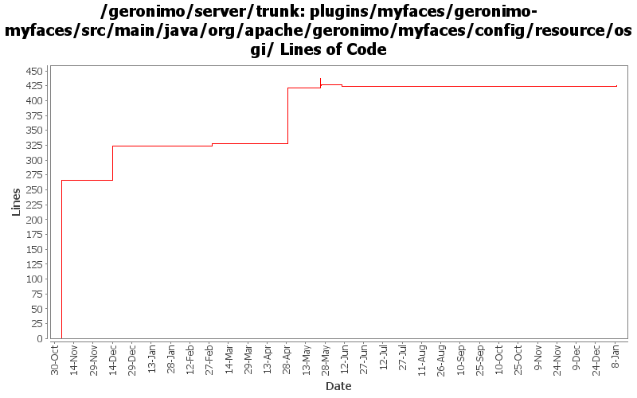

[root]/plugins/myfaces/geronimo-myfaces/src/main/java/org/apache/geronimo/myfaces/config/resource/osgi
 api
(1 files, 79 lines)
api
(1 files, 79 lines)

| Author | Changes | Lines of Code | Lines per Change |
|---|---|---|---|
| Totals | 17 (100.0%) | 545 (100.0%) | 32.0 |
| djencks | 3 (17.6%) | 266 (48.8%) | 88.6 |
| xuhaihong | 9 (52.9%) | 213 (39.1%) | 23.6 |
| gawor | 5 (29.4%) | 66 (12.1%) | 13.2 |
GERONIMO-6251 More changes to use OsgiMetaDataProvider, update the interface a bit.
GERONIMO-6254 Shared library does not work in the deployment process
3 lines of code changed in 1 file:
GERONIMO-5976: Minor fix to avoid UnsupportedOperationException
2 lines of code changed in 1 file:
GERONIMO-5938, GERONIMO-5976: Scan bundles for tag libs a little sooner to prevent a potential race condition with WAB extender
4 lines of code changed in 2 files:
GERONIMO-5938: refactor the code a bit
42 lines of code changed in 1 file:
GERONIMO-5938: Load JSF taglib xml files from bundles - considered wired bundles in addition to dependencies
18 lines of code changed in 1 file:
return boolean value to the tacker if required
19 lines of code changed in 2 files:
GERONIMO-5938 Load JSF taglib xml files from bundles
126 lines of code changed in 2 files:
Use getFullDependentBundles to make sure all the faces-config.xml files from the dependency tree are added
5 lines of code changed in 1 file:
GERONIMO-5713 MyFaces 2.0.3 Integration
60 lines of code changed in 3 files:
GERONIMO-5050, GERONIMO-5561 Add a bundle tracker to look up META-INF/faces-config.xml files in other bundles such as openwebbeans-jsf.
266 lines of code changed in 3 files: